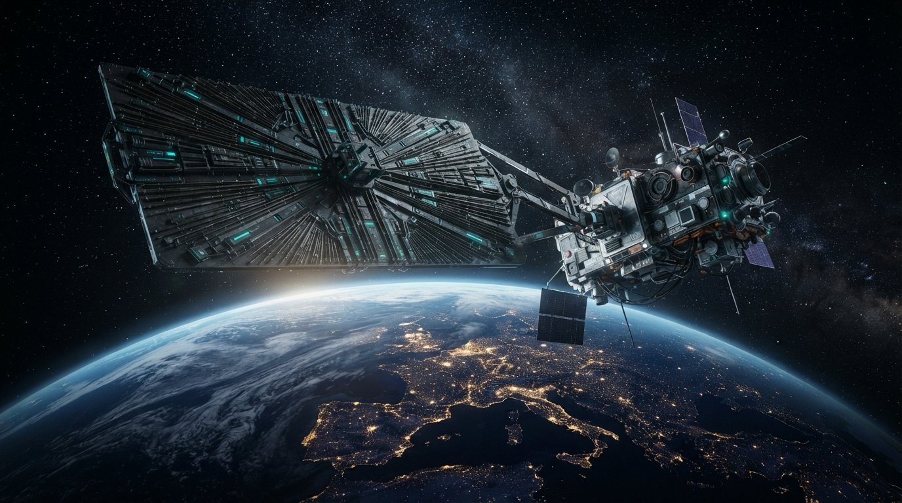
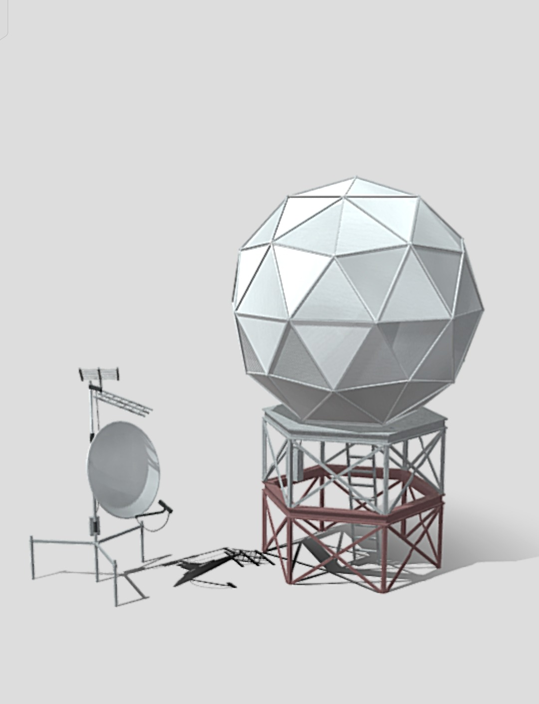
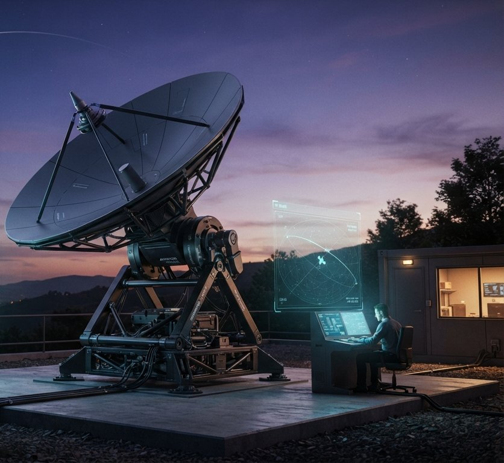
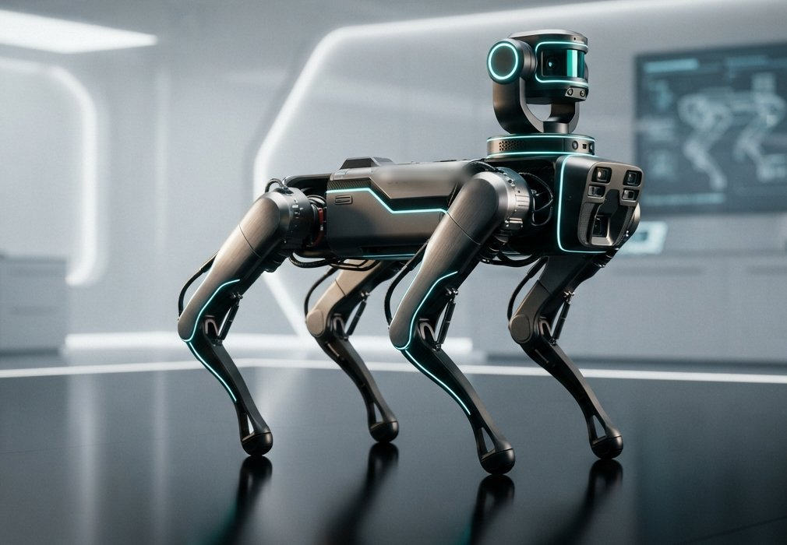
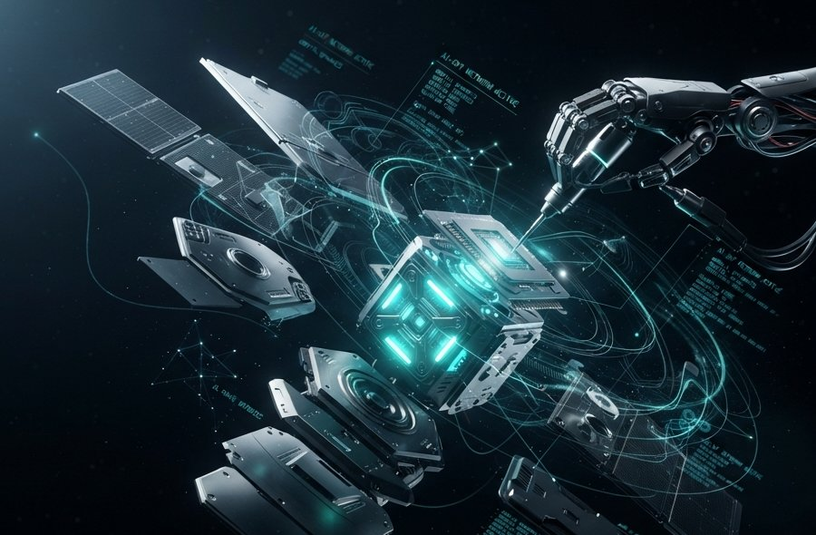

RF
Antenna arrays, ground-segment RF chains and signal processing, from EM simulation to bench measurement.
- Phased arrays
- S/X-band
- SDR · FPGA
We design SAR antenna arrays, satellite ground terminals and autonomous robots, and build the AI software and intelligent ERP that connect them into one working system.
 LiDAR
Depth camera
LiDAR
Depth camera
Aerox brings aerospace, robotics and artificial intelligence under one roof. We design the antennas that talk to satellites, the terminals that track them, the robots that map the ground, and the software that turns their data into decisions.
Keeping RF, mechanical and software engineering on one team means fewer hand-offs and systems that are designed to work together from the first drawing.
Antenna arrays, ground-segment RF chains and signal processing, from EM simulation to bench measurement.
Autonomous platforms with custom sensor integration, perception and control software.
Models that detect, forecast and decide, plus an intelligent ERP that runs the operation around them.

Sense. Connect. Operate. Learn.
One engineering team across orbit, ground and software
Each project below is listed with its real stage of development. We would rather show a precise design baseline than overstate flight heritage.
A space technology and orbital research architecture that links a hosted SAR payload, a ground terminal and a research centre into one mission data chain.
“Our objective is to contribute technology layers that can integrate with Pakistan’s evolving space and orbital research ecosystem.”Program statement
Hosted science and technology payloads
Dual-polarized X-band array
Tracking, telemetry and data reception
Operations, research and data analysis
 AX-RF-01 · RENDER
AX-RF-01 · RENDER
Dual-polarized X-band antenna array
A planar microstrip patch array sized for a LEO microsatellite, with a scalable path to larger apertures.
 AX-GS-01 · CAD
AX-GS-01 · CAD
Modular S/X-band satellite ground terminal
A tracking terminal for LEO passes, combining the antenna mount, RF chain and mission software in one modular design.

AX-INF-01 · CONCEPTBalochistan Space Operations & Research Centre
A proposed terrestrial centre for mission support and research. It is a ground facility, not an orbital station.
AX-RB-02 · HARDWARE
Autonomous mapping platform
A four-legged robot fitted with a custom LiDAR and sensor mount, used to build maps and navigate on its own.
We take responsibility for the whole lifecycle, so the hardware, the data and the software are designed to fit together.

Concept visualPayload interfaces, tracking ground terminals and the data pipeline from pass to archive.
Antenna and array engineering from EM modelling through fabrication and RF measurement.

Concept visualRobots that sense, map and move on their own, with sensor integration and control software built in-house.

Concept visualModels built into the systems we ship, and an ERP that suggests next steps, flags risk and automates routine work.

Aiman Fatima founded Aerox ERP to bring space, robotics and AI engineering into one company. Before Aerox, she founded MicroNex Pak and led it as Founder & Chairwoman, championing youth-led innovation, before selling the company.
“A visionary mind, a trailblazer in youth innovation.”Creative Leadership Conference 2025
Presented by Aerox ERP · Aerox Expo
Turn your final-year project into a startup. Pitch to investors over three rounds, meet working founders and leave with a QR-verified certificate.
Tell us what you need to build, track, map or automate. We’ll reply with how we would approach it and what a demo would cover.